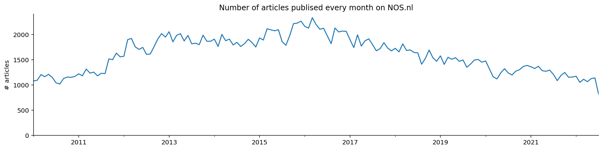
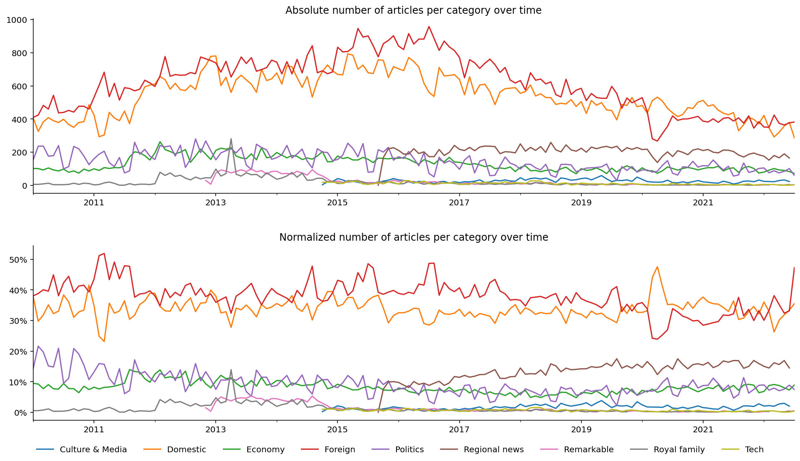
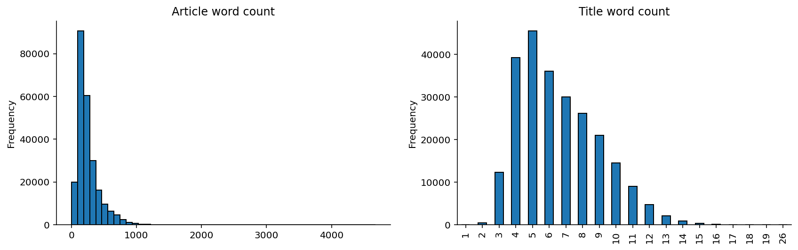
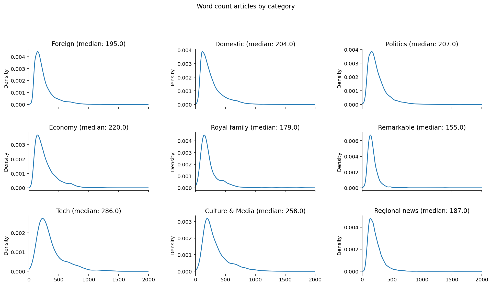
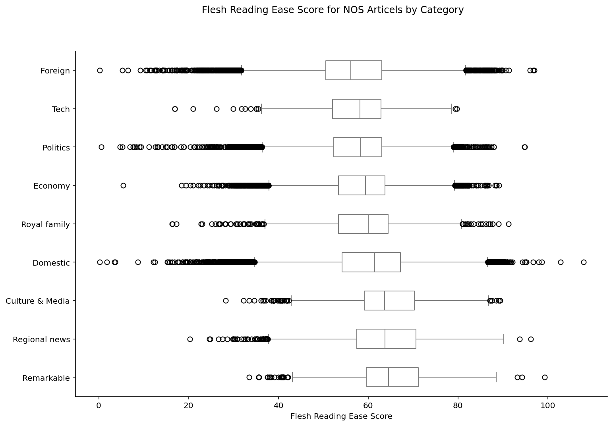
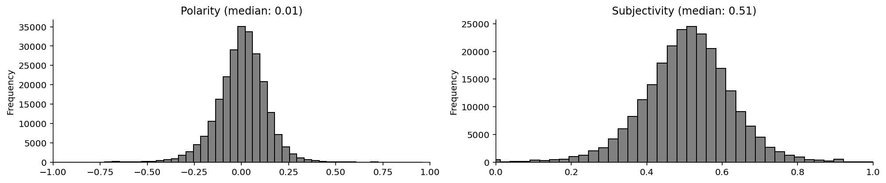
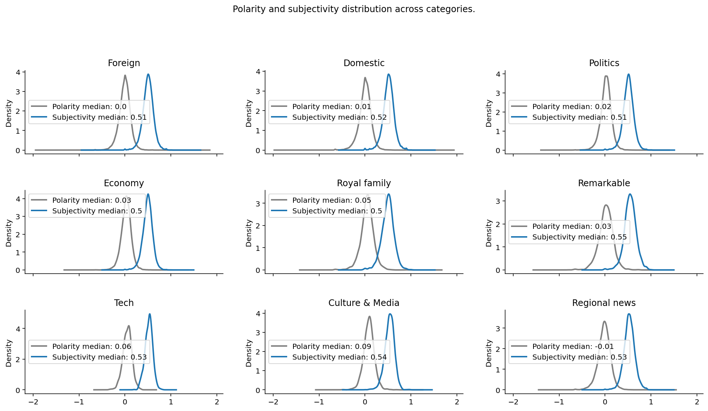
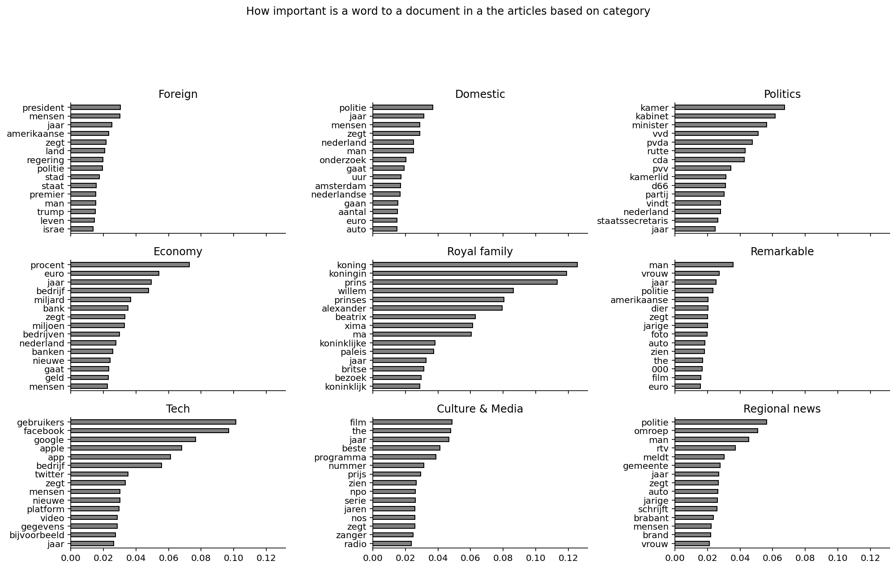

In this article, I analyze Dutch news articles. I gathered the news articles by scraping them from the NOS website. The NOS is one of the organizations of the public broadcasting system in the Netherlands and established in the Media Act. Its task is to provide the media supply for the national public media service in the field of news, sports, and events. The NOS is also one of the biggest online news websites in the Netherlands.
“Spanje is met ingang van vandaag voorzitter van de EU. De Zweedse premier Fredrik Reinfeldt heeft het stokje, formeel om middernacht, overgedragen aan zijn Spaanse collega José Luis Rodriguez Zapatero. Spanje is het eerste land dat het roulerend voorzitterschap…”
As of the publishing of this post, the dataset contains 218,609 news articles spanning more than 10 years (the first article in the archive is published on 2020-01-01). In addition to the article content, the dataset contains the article title, the category, and the publishing grade. The NOS also publishes live blogs. I do not consider these news articles. Therefore they are excluded from the dataset.
Before analyzing the news articles, the raw data needs to be cleaned. The texts contain a lot of white spaces and some weird characters. I use regular expressions and some Python string methods to remove extra white spaces and these wrong characters. After cleaning the content of an article will look something like you see in the summary box.
Most of the analysis focuses on the differences between article features based on the category they are classified as.
Article Counts
The first thing to look at is the article count over time between 2010 and 2020. To get a less stochastic article count, I decided to group them by months over time. From 2010 to the middle of 2016, the monthly article count increased from around 1000 to a little more than 2000. After 2016 we see a downwards trend in the number of monthly articles published to 1100 in 2020.
More interesting is probably to look at the change of monthly article count when we split the articles based on category. If we look at the absolute count over time, we see the same trend as the overall article count. This is most likely caused by the “Binnenland” (domestic) and the “Buitenland” (foreign) categories, which display the same trends.

Therefore I choose to normalize the counts based on category. The second graph shows the share of a news category in the total number of articles in a specific month. For example, there is a large bump in the domestic news share (and drop in foreign news) in the first quarter of 2020 caused by the initial Coronavirus outbreak. In contrast, most of 2011, the foreign news articles were most prevalent, probably caused by the start of the Arabic Spring, the capture of Osama Binladen, and the terrorist attacks in Norway.
Word Count
The word count of an article can be an indicator of the quality of the news article. Blumenstock et al. Blumenstock (2008) show that longer Wikipedia articles are more likely of better quality. Longer articles are more often featured than shorter Wikipedia articles. They state that word count is a robust method of article quality.
Let us first look at the overall word count of all the articles published by the NOS. As expected, the word count of the article is heavily right-skewed (when used for modelling probably better to use the log). Also, the word count of the title is more normally distributed, which is expected.

Tech and Culture & Media have the highest median word count. This makes sense to me. These articles are often less time-dependent. Meaning that their publishing is less dependent on the daily news cycle. They are still relevant at a later moment than political news. This suggests that writers have more time to write these articles, can incorporate more detail, leading to longer pieces. The “remarkable” and “regional news” category have the lowest median news count. This is expected most of these articles report small news events, leading to shorter pieces.

Readability
Another important of a news article is how easy it is to read. Readability measures how hard it is to read a text. There are several methods to calculate readability. These methods are not that reliable, but they give some insight into the readability of a written text. In this analysis, I use the Flesch reading-ease test to calculate readability. Douma Douma (1960) slightly tweaked the values in the Flesch reading-ease test formula such that the measures can also be used for Dutch texts.
Flesch-Douma
The Flesch-Douma formula Douma (1960) equates readability to the following formula:
\[ readability = 206.835 - 0.93 (\frac{total words}{total sentences}) - 77.0 (\frac{total syllables}{total words})\]
| Score | School level | Notes |
|---|---|---|
| 100–90 | 5th grade | Very easy to read. Easily understood by an average 11-year-old student. |
| 90–80 | 6th grade | Easy to read. Conversational English for consumers. |
| 80-70 | 7th grade | Fairly easy to read. |
| 70-60 | 8th & 9th grade | Plain English. Easily understood by 13- to 15-year-old students. |
| 60-50 | 10th to 12th grade | Fairly difficult to read. |
| 50-30 | College | Difficult to read. |
| 30-10 | College graduate | Very difficult to read. Best understood by university graduates. |
| 10-0 | Professional | Extremely difficult to read. Best understood by university graduates. |
The articles categorized as Foreign, Politics, Tech, and Economy are the hardest to read with a readability score below 60, which is about 10th to 12th-grade-level reading. So somewhat hard to read. Categories “remarkable news”, “regional news” and “culture & media” are easier to read with a score above 60. However, the overall median scores are not that different across categories.

Sentiment, Polarity, and Subjectivity
Let us look at the sentiment of the texts. Are they positive or negative? Furthermore, we can also analyze the texts for subjectivity. When looking at all the articles together, we see that most of the news articles are neutral in their polarity. Most of the articles hover somewhere in the middle between subjective and objective in their subjectivity measure.

Even if we parse the articles by news category we do not see many differences in the distributions of polarity and subjectivity scores.

Informative words
We can use TF-IDF, short for term frequency-inverse document frequency, to extract the most informative words out of every article. TF-IDF is a numerical statistic that is intended to reflect how important a word is to a document in a collection or corpus. In this case, I removed stop words, because most of the time they don’t contain any useful information. Also, I ignore terms that appear in less than 0.5% of the documents. Let’s see if what the most informative terms are in the news articles in every category.

The TF-IDF result is pretty interesting. For example, we can see that the most informative terms (translated to English) in articles categorized as politics are: chamber, cabinet, minister, political parties (VVD, PvdA, CDA, D66), member of parliament, and secretary of state. All words that are associated with politics. The most informative terms in the economic news articles are also associated with the economy. For example, percent, Euro, company, billion, banks, and money. In the Royal Family category, we see that the words King, Queen, Prince, Princess, Willem (the king’s first name) are all highly informative.
References
Blumenstock, Joshua E. 2008. “Size Matters: Word Count as a Measure of Quality on Wikipedia.” In Proceedings of the 17th International Conference on World Wide Web, 1095–96. WWW ’08. New York, NY, USA: Association for Computing Machinery. https://doi.org/10.1145/1367497.1367673.
Douma, W. H. 1960. “De Leesbaarheid van Landbouwbladen : Een Onderzoek Naar En Een Toepassing van Leesbaarheidsformules.” Bulletin / Afdeling Sociologie En Sociografie van de Landbouwhogeschool Wageningen.